正君
之教

依据国家《中学德育大纲》《中小学文明礼仪》《中国学生素养2016》和深圳中学德育目标要求，结合6班学生年龄特点和班级定位，制定6班初三阶段德育发展方向，并以此开展和评估班级工作，以期能够增进家校理解与合作，为培养具有现代特质的中学生提供发展性支持。
（一）价值观教育：关于核心价值观的体系构建是一个意义深远的行动，关乎孩子的生命状态和民族的未来。本学期将着重构建的是：“竞争”，主要内容是：挑战、勤敬、坚持、超越。
（二）学习小组： 班级是一个学习团队，由仁义礼智信五个学习小组构成。初三冲刺阶段整体要发挥好小组合力，但在竞争中仍然要突出主动性与战斗力。
（三）学科管理： 把各学科的管理分为四个学段，不同学段进行考核;针对性要强，让每一个学生都在实现个人目标的征途上奔跑。
（四）综合能力 ：在思维能力、表达能力、动手能力、协作能力等方面呈现出不一般的素质。
（五）文化生活： 家长群体将发挥主导作用和资源优势，举行与学科有关的互动活动，深化学习的情趣。同时还合力打造亲子文化。
当我们把老师、同学、家长三个群体融合在时，我们会发现这是一种十分美好的机缘，我们可以创造更有意思的生存状态。只要我们都充分尊重，十分珍惜，万分努力，就能争得百分的满意。
目标：立德树人，全面发展
★初步培养全球视野、家国情怀、共情意识
★深圳中学学生特质五维度：荣誉、责任、习惯、思维、卓越
●培养尊重自己、尊重他人、尊重责任、尊重优秀之竞争品德
●培养组建团队、制定团规、依规办事、协调关系、解决问题的能力
●尊敬父母师长，遵守公共文明礼仪，关注细节，感受情义
●适应初三备考阶段心理变化，情绪与行为的自控能力有所发展
模式：学习型团队
口号：挑战竞争 青春无悔
结构：班主任----团支部---班委会----学习小组-----家长群
团支部——书记：徐宁馨 组织委员：梁云天 宣传委员：钟欣彤
班委会——班长-梁云天 副班长-汤振阳 学习委员-朱真 卫生委员-张晨 朱天皓 宣传委员-钟诗琪 陈锦浩 纪律委员-李嘉浩
体育委员-郑晨亮 钟欣彤 文娱委员-李海正 生活委员-潘琪子慧 电教管理员-易昀霖 静校管理员-杨启轩 汤振阳
学习小组：仁（曹心爱）、义（庄涵）、礼（袁妙莹）、智（雷俪）、信（钟欣彤）
家委会—— 会长：曹心爱爸爸

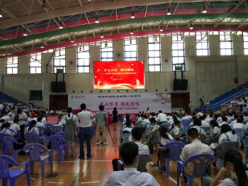
中考


3.留言板
 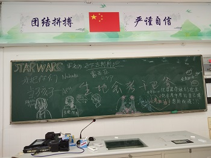
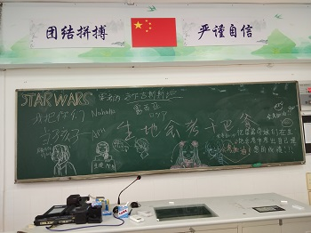1、志愿填报确认
2、自主招生填报
3、自由复习


4、感恩老师


1.填报中考志愿说明会

2.紧张备考


1.拍摄毕业合影
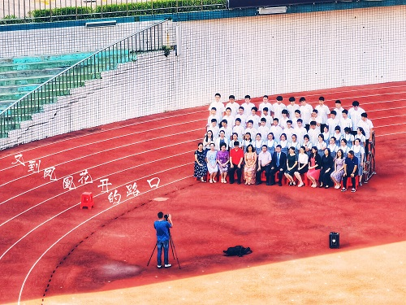
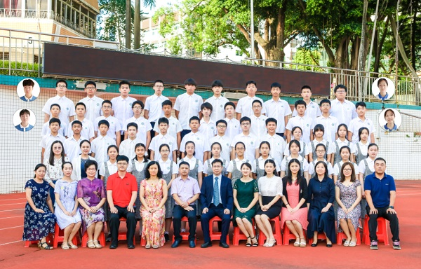
2.部分同学启动突击计划
3.网络评教
1.理化实验操作考试
6月24日上午


2.英语听说中考
6月26日

3.6月模拟考试
开讲了——女排精神
2、中考安全承诺书
发放安全承诺书
3、 体育中考
6月20日，征战体育中考。35个满分。


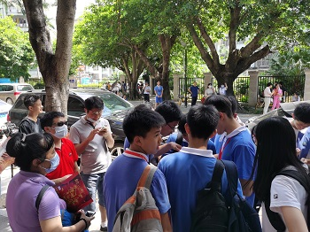

时事讲评
2、家委交流
3、红暴停课半天
1.英语听说模拟考试
6月6日，市英语听说模拟考试。

2.中考说明

3、主题板报：盯紧目标不放松 团结一致往前冲


4.宣布综合评价结果
6月1日放学时间，宣布综评结果，梁云天、徐宁馨、陈采玥等19位同学评为A。
5.英语听说模拟考试说明会
6.调整状态，个别谈心
整体来看，相较于上学期期末，有24人取得进步，而且集中在前营。
前十：梁云天、陈采玥、徐宁馨、汤振阳、钟欣彤、黄中睿、张弛斌、张晨、杨润彤、陈锦浩

2.清理、更换整理箱


3.综合评价
上机操作，背对背进行投票。
4、主题班会
初三学习、复习方法指导
播放挑战不可能节目
1、模拟考试
5月21-22日，联考。


2.英语听说考试（5月19日上午）


3、综合评价实证材料公示

4、体育中考报名
1、主题班会
5月11日晨，学校辅导中心组织心理专题班会
2、测试
5月12日，测试一天，让学生找找考试的感觉。
3.综合评价启动
提交自评、家长评和实证材料

4、体能训练启动
5月4日，观看5月3日晚上新闻联播视频15分钟，明确当代青年责任担当，团员重温入团誓词。


2、中考报名信息录入
3、中考报名拍摄照片
1.复学第一课
4月27日，深圳初三高三复学，早上7点45分，年级组织复学第一课主题班会。朱校长发表重要讲话。
（见初中部公众号文章：鹏城正值芳菲节，凤凰木下与君约 ）
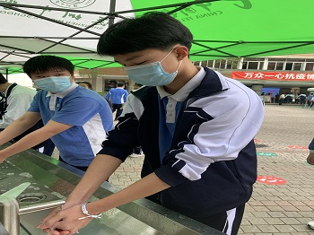


2.午餐与静校


3.晨午测温


4.教室宣传

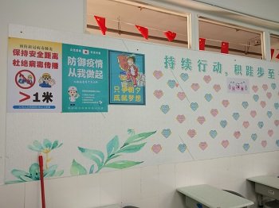
5.体育课


6.五一节放假
5月2日晨，徐宁馨、郑晨亮、陈星辰登顶梧桐山。
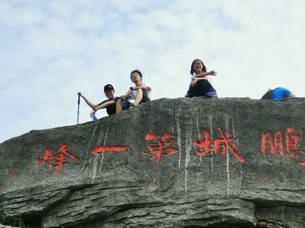
4月25日下午，水库小学，学生完成核酸检测采样。


2、复学板报
为配合复学，加强宣传指引，家委制作了板报。


3、年级组织复学专题会议
4月20日周一，年级主题班会，按下重启键。
4月24日周四，年级线上家长会，通报抗疫复学准备工作。
4、年级组织学生健康卡申报
4月13日，线上主题班会：行到水穷处，坐看云起时。年级定制。


2、复学前的准备
收集学生资料
登记午餐情况
3、线上自测
周末理化和历史进行了线上自测
4月5日、6日，语数英三科线上自测。
2、线上K歌活动
周六晚上，文娱委员李海正同学组织了班级线上聊天K歌活动，参加的同学不少，大家适度放松。（没有截屏）
3、“班团两委周周报”（4）
4、接通知4月27日将启动复学
（1）年级班会：3月30日，年级统一班会，主题是“自律、责任、理想”。
（2）生命教育：4月3日，年级统一班会，我班主题是“生命在于运动”。


2、班级线上K歌活动策划
为缓和抗疫备考双重任务的紧张气氛，班委李海正、徐宁馨等同学策划线上集会。
3、全国哀悼日——班级线上共写悼语活动
4月4日，全国哀悼日，为悼念抗疫烈士与逝世同胞，班级发起线上共写悼语活动，共有近30人次参加。
4、班团两委周周报（3）
5、线上检测
3月23日，年级动员会，并在腾讯会议上试镜。收集家长邮箱。（后取消，改成线上自测）
2、班团两委周周报（2）
希望孩子们学会管理自己的学习，班团的干部和团员们要做好榜样，其他同学也要盯紧自己的中考目标，不可大意，与当前全球抗疫相类！
网课学习中——百日誓师大会：奋斗有我，青春更美
3月16日，初三年级举行线上中考助推活动。
党员教师引领：


学生誓言：
家长助威：
云中亮剑百日功，班团两委周周报
在线文档简报


团员誓言：
徐宁馨：为了心中的远方，纵是千山万水也要跨越。百日成就辉煌，中考必胜！
严杏琳：成功就是能达到自己的目标，不管过程有多难。
袁妙莹：追求品质，只争朝夕，全力以赴，矢志不移。
曹心爱：全力以赴，用勤奋改变人生；永不言败，以执着成就未来。希望我们都能奔赴心中的那个远方。
梁云天：养兵千日，用兵一时，不畏艰险，不断向前，定不负年少芳华！
朱真：中考将近，在接下来的一百天内，我必将全力以赴；为了成为自己所希望的样子，就算在刀尖上起舞又如何？
杨润彤：笑战人生是我们无悔的选择，决战中考是我们不懈的追求，“苦战百日”是我们许下的庄严承诺，不作懦弱的退缩，不作无益的彷徨。争分夺秒，奋战百日，全力以赴，铸就辉煌！
汤振阳：决胜中考，是我不懈的追求；流金六月，我们注定成功。
黄中睿：我希望在中考前100天中，我可以“长风破浪会有时，直挂云帆济沧海”！
钟欣彤：身为团员，我要做好榜样，在中考中取得好成绩！
张晨：为了理想学校，为了美好未来。在距离中考剩下的日子中，我誓将努力前行，奋勇拼搏，挑战自我，不负韶华。用努力铸就铠甲，用信心打造利剑，在中考的千军万马中，我们必将长风破浪!
梁竣：把拼搏当做快乐，把挫折看成收获，把鼓励化为动力，把成功留作回忆。
潘琪子慧：在往后的日子里，我将惜时如金，努力拼搏，我要亮剑六月，全力以赴，奋战每一天，让飞翔的梦展开理想的翅膀！
李海正：有志者，事竟成，破釜沉舟，百二秦关终属楚；苦心人，天不负，卧薪尝胆，三千越甲可吞吴。仰望星空，脚踏实地。让我们如战狼一般，向中考，向我们的未来，冲吧！
李嘉浩：A=X+Y+Z，X和Z我们已紧握在手中，最后的时间里做好Y，我们必将胜利。
陈锦浩：三年磨剑，冲刺百天，志在千里。不低头，不后退，不放弃，吹响向胜利冲锋的号角，决胜中考，无悔青春。
陈采玥：诗到修璞成玉时，蓦然回首，书山已过万丈天。一咏一触谁与共，定不反鸿鹤志。拼一载春秋，搏一生无悔，定不负这青春韶华。


发言记录：
1.特殊时期是弯道超车的关键时期，要好好把握。除了重点复习之外，还要找时间来阅读，如读者。
2.要加强自律，除了上好网课外，还要根据个人进度有选择的刷题，英文可以读一点英文版的小说。
3.巩固基础，提前复习，多朗读，重视作业，认真完成，自己订正。
4.理清基本公式，做题不在多，而在精。要有一个错题本，很重要。
5.要有计划性，调整状态，提升效率。
网课学习中——听听班委的心声


班长梁云天：
2020年，一开始便注定是个不平凡的年份。新年伊始，新型冠状病毒在全国爆发，感染的人数与日俱增，使得全国上下人心惶惶。正当大家忐忑不安之时，白衣天使们挺身而出，不辞辛劳地在抗疫一线奋战，与死神抢人。不畏艰险，救死扶伤，这是多么高尚的品德啊！我们作为学生，暂时还没有这样的能力，但也应为抗疫出一份自己的力。如今，延迟开学，开展线上教育，我们应该做的，就是在家中认真上好网课，完成好布置的线下作业。这不仅是对老师劳动的尊重，更是对自己的负责。
线上开学以来，相信大家都取得了不同程度的进步吧。就我个人来说，最大的进步应该是在自律方面，以往的我只要看到手机，便两眼放光，控制不住自己想要去点开那些花花绿绿的APP图标。但经过两个星期网课的磨炼，我已从最开始的无法集中精神认真听老师授课，到现在能有效的利用手机投入在学习上了。
但是在效率方面，却又有所退步，那么在家学习期间，我们该如何提高效率呢？
谢谢大家！
学习委员朱真：
这应该会是我们第一次也是最后一次以网络的形式上课了吧？所以也要好好珍惜这段时光啊。虽然现在一天只有五节课了，但课少对我们来说未必是件坏事，这样一来，我们就有更多的时间去攻自己的劣势科目。平时上学，因为课程多、放学晚、作业多导致我们很少有时间去学习自己的弱势科目，久而久之，恶性循环。但现在不一样了，留给我们课后的时间变多了，我们可以将更多的精力放在这些科目上，所以我们更应该好好利用这次机会，复习一下以前的知识，多刷几套题，努力将自己的缺点变为优点。
不过在这里，我想问大家一个问题：你们认为是先刷题，然后再找知识漏洞好呢，还是先大概复习一下再去刷题巩固好呢？
谢谢大家！
体育委员郑晨亮：
大家好！我是郑晨亮。在全民抗疫期间，我没有忘记体育锻炼，坚持“避冠”修炼。被禁足无法户外活动后，我只能在室内运动了。刚开始的室内运动，不习惯也不知道该做什么，只会做简单的拉伸动作，目的性不强。线上开学后，特别的线上体育课让我有了锻炼的目标。线上体育课让我懂得了如何借助辅助工具进行锻炼，学会了多种在家里运动的姿势。为了提升我的体力。按照计划，我每天坚持做两分钟的平板支撑、50个引体向上及一分钟的高抬腿，最后加上哑铃加大动作难度。现在我的体力和引体向上都有进步。
这次疫情，让我们在家呆了一个月，没出门户外运动，在家运动受限，无法施展开来，担心跑步、篮球运动会变差，所以请问同学们在家如何更有效锻炼像篮球、跳绳的？（加强篮球）
团支书徐宁馨：
我所讲的内容是与美相关的，我认为这个美指的是心灵美。在疫情期间，贵阳一女性不戴口罩在商场闲逛、并且对工作人员大吵大嚷，这种行为是不美的。而与此同时，医护人员都在一线奋战着。武汉封城后，湖南一位工作在武汉的护士为了回城救助患者，从湖南骑自行车，骑了三百多公里路回到武汉。
现在我们在线上与老师一同停课不停学，也应做到行为美。不要刷屏等等自然是不用多说了；虽然隔着屏幕，我们也应尊重老师的劳动成果：虽然是网课，老师们仍付出了许多。
自从上网课以来，我的效率有了一定的提高。但是因为网课期间常常要用到电脑和手机，还是没有完全做到自律。我的疑问是如何在网课期间做到自律？
这就是所有我想说的，谢谢。
劳动委员张晨：
今年的春节是个令人难忘的春节，也是个具有挑战性的春节。在这个春节我取得了一些进步，同时，也有着自己的一些困惑。
进步：为了阻止这次疫情的传播，我们许多人会在家进行自我隔离。刚开始，我的自我控制性特别差，大部分时间会用来玩电子产品，从而荒废了大部分时间。后来随着政府号召，我舅舅回到工作岗位，挨个检查企业复工情况，每天脸上会被口罩勒出一道道痕迹。望着他和许多在一线奋斗的医务人员，我被他们奋斗的精神所感染，为自己之前的行为感到愧疚，于是改变了自己的学习态度，并会在家里做一些力所能及的事如帮助父母做家务，勤洗手，对家中门把手，阳台进行定点消毒。不感染他人，也不为被他人感染提供可能。
困惑:很少运动。虽然体育老师每天会指导我们锻炼，但在家中还是很少运动，且家中没有什么运动器材，空间狭小。
2月17日，学校利用腾讯课堂线上组织了本学期的开学典礼。朱校长鼓励大家在家也要努力学习。
2、线上学习生活启动


 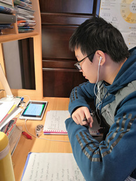
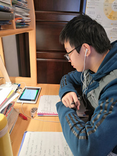
 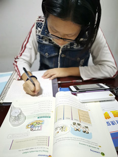
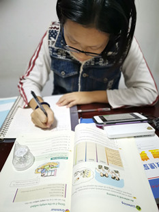1、期末考试情况通报
总分前十：
徐宁馨（416.1）
梁云天、陈采玥、钟欣彤、杨润彤、汤振阳、陈锦浩、张晨、黄中睿、张弛斌。
单科级次250名之前者：
语文优良者：钟欣彤、梁云天、汤振阳、雷俪、徐宁馨、陈采玥、杨润彤、林怡、黄中睿、朱真、易昀霖。
数学优良者：陈采玥、徐宁馨、陈锦浩、李嘉浩、梁云天、杨润彤、钟欣彤、汤振阳、潘琪子慧、林怡、余凯、李坪燃、黄中睿、张晨。
英语优良者：徐宁馨、梁云天、汤振阳、杨润彤、陈锦浩、雷俪、钟欣彤、严杏琳、袁妙莹、陈采玥、曹心爱、朱真、黄中睿、钟宇轩、张弛斌、梁竣。
物理优良者：梁云天、徐宁馨、陈采玥、张弛斌、张晨、杨润彤、汤振阳、钟欣彤、潘琪子慧、陈锦浩、李嘉浩。
化学优良者：陈采玥、李嘉浩、梁云天、徐宁馨、汤振阳、陈锦浩、张晨、钟欣彤、林怡、杨润彤、张弛斌、王雨彤。
历史优良者：钟欣彤、袁妙莹、黄中睿、梁云天、陈锦浩、吴宇森、陈采玥、张晨、汤振阳、朱真、付洛瑜。
体育优良者：钟欣彤、梁云天、吴宇森、陈采玥、张晨、杨润彤、徐宁馨、张弛斌、曹心爱、夏浩涵、严杏琳、余凯、潘琪子慧、陈攸宜、陈星辰、郑晨亮、李海正。
相较于期中考试级次进步者
陈锦浩、杨润彤*2、钟欣彤、李坪燃、庄涵*2、徐宁馨、夏浩涵、钟诗琪、钟宇轩、
史墨轩*2、付洛瑜*2、余凯*2、陈攸宜*2、袁妙莹、张晨*2、陈星辰、于越*2、金雨祥*2。
2、家长会
2020年1月16日晚上举行家长会。


3、期末班级风采展示
展示团队：梁云天、朱真、张晨、朱天皓、陈锦浩、汤振阳、雷俪

4、中考年班级服务团队人员调整
团支书：徐宁馨
班长：梁云天
副班长：汤振阳
学习委员 朱真
体育委员 郑晨亮 钟欣彤
卫生委员 张晨 朱天皓
生活委员 潘琪子慧
纪律委员 李嘉浩
电管委员 易昀霖
静管委员 杨启轩 汤振阳
宣传委员 钟诗琪 陈锦浩
文娱委员 李海正
组长：曹心爱（仁） 庄涵（义） 袁妙莹（礼） 雷俪（智） 钟欣彤（信）
科代表
语文：庄涵 钟诗琪
数学：潘琪子慧 陈采玥
英语：梁云天 汤振阳
物理：张晨 张弛斌
化学：曹心爱 黄中睿
历史：吴宇森 陈锦浩
5、寒假
初三：挑战竞争 青春无悔
zjchen@shenzhong.net